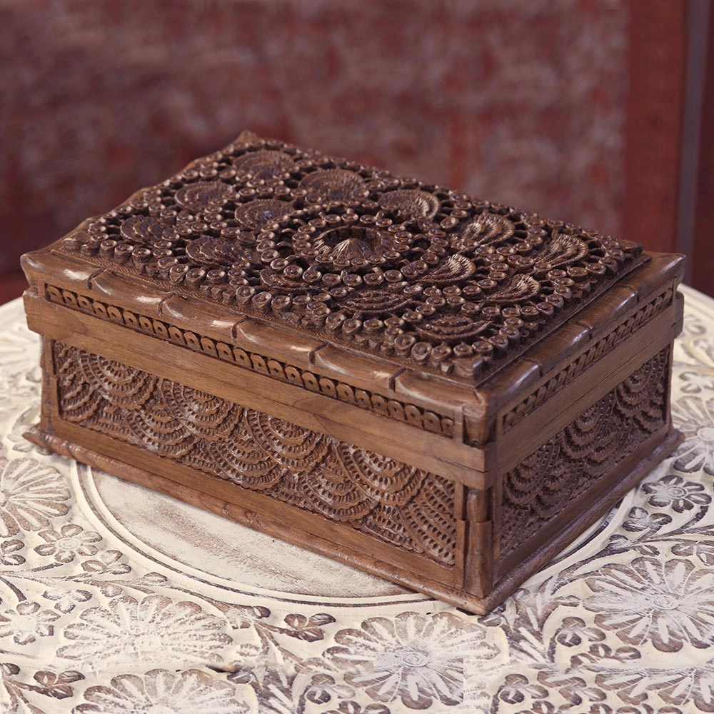

Products

Pottery
Pottery reflects the region's rich heritage, with artisans creating exquisite, hand-crafted pieces.
Spices
Spices in Kodaikanal offer rich, aromatic flavors sourced from local farms, enhancing culinary experiences.

Walnut Wood Items
Walnut wood items in Kodaikanal combine natural beauty with exquisite craftsmanship.

Wicker Basket
Wicker baskets in Kodaikanal offer rustic charm and local craftsmanship, ideal for traditional shopping experiences.
Aromatic oils
Aromatic oils in Kodaikanal offer locally sourced fragrances for relaxation and rejuvenation.